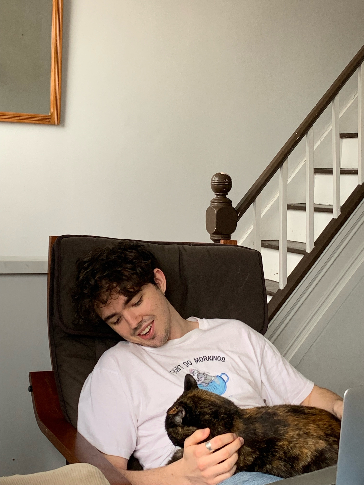

Hi there.
My name is Quinn. I recently finished my Masters of Science in mathematics from the University of Toronto under the supervision of Vardan Papyan. My thesis examined the geometric configuration of last-layer activations induced by the data augmentation method called "mixup". A more detailed explanation of this (as well as other research projects) can be found under the Research drop down menu above. I have a wide range of interests that I'm always looking to expand on, though my recent efforts have been focused on deep learning. In the past I've worked on projects in biostatistics, mathematical biology, statistical modelling, and more.
I'm currently a Machine Learning Researcher at the UofT mathematics department while I look for a more industry focused job. If you would like to talk to me about any of my projects or interests, please feel free to reach out to me (bottom of the page or via resume link). I really love to learn and enjoy talking to people who know more about a topic than I do!
What is on this website?
I made this site to showcase some of my work as well as to practice my HTML, CSS, and JavaScript. The "Research" tab above showcases a few projects I'm currently working on. I would note that I am not yet able to publish some of my current projects involving Vision Transformers, LLMs, and Semi-Supervised Learning. The other work tab gives some examples of random bits and bobs so to speak of work I've done and still have access to.